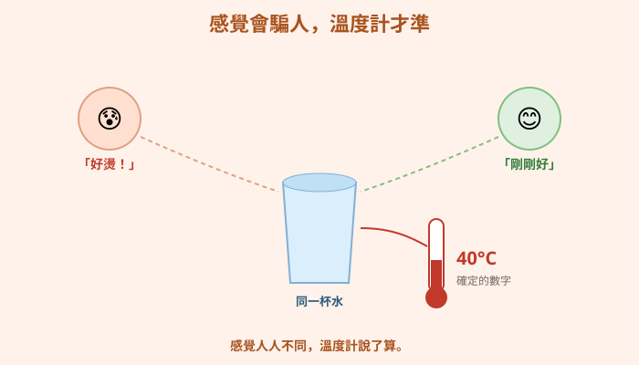
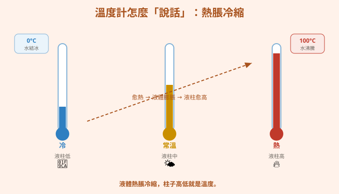
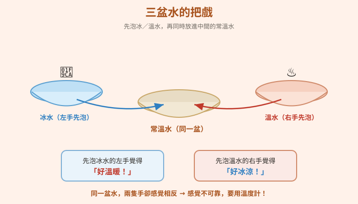
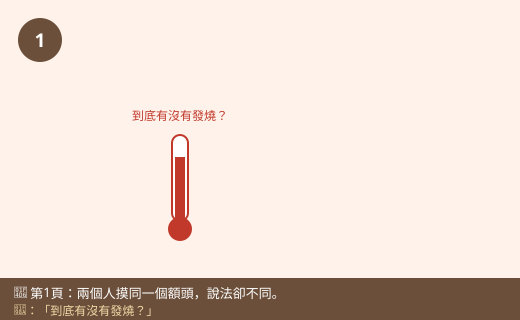
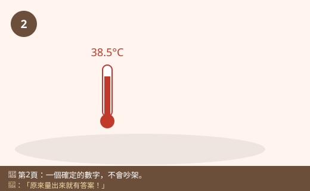
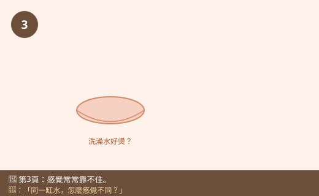
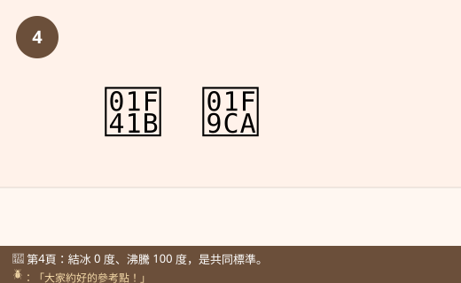
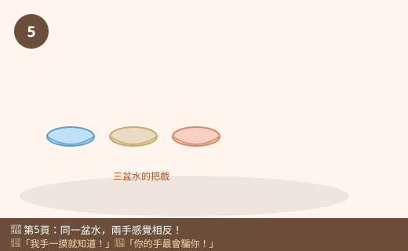
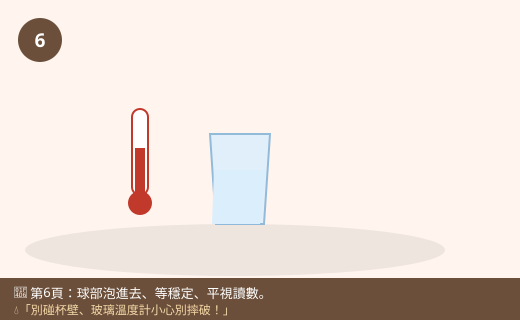

圖一（概念圖）：感覺會騙人，溫度計才準

- 圖像目的
- 對比「主觀感覺不一致」與「溫度計客觀一致」。
- 圖中應出現的元素
- 同一杯水，兩人手感不同（燙／剛好）；溫度計顯示同一數字。
- 必須標示的科學概念
- 感覺不可靠；溫度計提供客觀數字。
- 圖說
- 「感覺人人不同，溫度計說了算。」
- AI 繪圖提示詞
- 溫暖手繪繪本風，同一杯水，兩人表情不同（覺得燙/剛好），旁邊溫度計顯示明確數字。繁體中文，白底。
- 避免畫錯的提醒
- 兩人感覺不同但溫度計只有一個數字；不要畫成溫度計也不一致。
💡 「有點熱」「好像有點涼」——每個人的感覺都不一樣。溫度計卻能用一個數字，準確地告訴我們到底有多冷、多熱！
| 適合年級 | 國小三年級 |
|---|---|
| 可銜接年級 | 三年級 → 五年級（熱的傳播）→ 國中溫度與熱 |
| 主題分類 | 物質、熱與變化 |
| 核心概念 | 溫度是冷熱的程度；用溫度計客觀測量；感覺不可靠 |
| 關鍵詞 | 溫度、冷熱、攝氏、溫度計、測量、感覺 |
| 可銜接的國中概念 | 溫度與熱、熱脹冷縮、測量 |
| 建議閱讀時間 | 約 15 分鐘 |
| 適合搭配的課堂活動 | 三盆水感覺實驗、量體溫氣溫水溫、讀溫度計練習 |
早上起床，小狐同學覺得頭昏昏的。媽媽伸手摸摸他的額頭，皺眉說：「好像有點燙，你是不是發燒了？」奶奶也來摸一摸，卻說：「還好吧，我覺得不太熱。」兩個人摸同一個額頭，一個說燙、一個說不燙，到底誰說得對？小狐同學更糊塗了：「我自己也搞不清楚，到底有沒有發燒啊？」
媽媽拿出耳溫槍，「嗶」一聲，螢幕上出現「38.5°C」。「你看，這個數字比正常的高，你真的發燒了。」小狐同學盯著那個數字，忽然覺得好神奇：「原來用『摸』的每個人感覺都不一樣，可是這個小東西量出來，就是一個確定的數字，不會吵架！」
他想起前幾天洗澡，也發生過類似的事：他把手伸進浴缸，大叫「好燙！」可是爸爸把手伸進去卻說「不會呀，剛剛好」。同一缸水，怎麼有人覺得燙、有人覺得剛好？還有冬天摸鐵欄杆覺得冰冰的、摸木頭卻沒那麼冰，明明放在同一個地方……「我們的『感覺』好像常常靠不住。那要怎麼知道東西真正有多冷、多熱呢？」
黑熊老師笑著說：「小狐，你發現了一個大祕密——我們的感覺會騙人！冷熱的程度，我們叫它『溫度』。但用皮膚去感覺，每個人、每種情況都不一樣，很不準。所以科學家發明了『溫度計』，它能用一個客觀的數字，準確地告訴我們溫度是多少，大家看了都不會吵架。我們一起來認識會說話的溫度計吧！」
黑熊老師，為什麼媽媽和奶奶摸我額頭，感覺不一樣？
因為用皮膚感覺冷熱，會受到很多影響——奶奶的手可能比較溫，摸起來就覺得你沒那麼燙；媽媽的手比較涼，就覺得你燙。每個人的手溫不同，感覺就不一樣。所以「感覺」不能當作準確的標準。
那什麼是「溫度」？
溫度就是「冷熱的程度」。愈熱溫度愈高、愈冷溫度愈低。我們用溫度計把它變成一個數字，單位是「攝氏度」，寫成 °C。這樣不管誰來看，都是同一個確定的答案。
補一個冷知識！攝氏溫度有兩個很重要的數字：純水結冰時是 0°C、水滾開（沸騰）時是 100°C。這兩個點是大家約定好的「參考標準」，中間平均分成一格一格，我們才能說「今天 28 度」「體溫 37 度」，全世界都聽得懂。
溫度計裡面紅紅的（或銀色的）柱子，為什麼會自己上上下下？
因為裡面的液體有「熱脹冷縮」的特性——變熱時會膨脹、往上升；變冷時會收縮、往下降。溫度愈高，柱子升得愈高，我們看柱子停在哪一格，就知道溫度是多少。溫度計就是這樣「說話」的。
那用溫度計要注意什麼？隨便一量就對了嗎？
要用對方法才準喔！量水溫時，溫度計的球部（底端）要「完全泡進水裡」，但不要碰到杯底或杯壁；要「等一下」讓數字穩定不動了再讀；讀的時候「眼睛要跟液柱同高、平視」，不要斜著看。這樣量出來才準確。玻璃溫度計要小心別摔破喔！
哼，用摸的最快最準啦！我手一摸就知道幾度，根本不用什麼溫度計。而且我覺得燙，那就一定是很燙、溫度很高，我的感覺最準了～
迷思怪獸，你的感覺最會騙人了！我做個實驗給你看：先把一隻手泡冰水、一隻手泡溫水，過一下子，兩隻手同時放進「同一盆常溫水」——泡過冰水的手會覺得溫水好溫暖，泡過溫水的手卻覺得同一盆水好冰涼！同一盆水，兩隻手感覺完全不同，可見「感覺」根本不能拿來準確判斷溫度，一定要用溫度計。
哇，原來我的手真的會騙我！那我來多練習用溫度計。
溫度就是「冷熱的程度」——愈熱溫度愈高、愈冷溫度愈低。用皮膚感覺冷熱很不準，因為每個人、每種情況感覺都不一樣（同一盆水有人覺得燙、有人覺得剛好）。所以我們用溫度計來準確測量，把冷熱變成一個數字，單位是攝氏度（°C）。水結冰是 0°C、水滾開是 100°C。溫度計裡的液體會熱脹冷縮：熱就往上升、冷就往下降。用溫度計要記得：球部完全泡進去、不碰杯壁、等穩定、平視讀數。
溫度是物體冷熱程度的客觀量，需以工具（溫度計）與單位（攝氏 °C）測量、比較。人體皮膚的溫覺是相對的、不可靠的：感覺受手本身溫度、之前接觸的冷熱、材質導熱快慢等影響（如同溫下金屬摸起來比木頭冰，是因金屬導熱快）。常見液體溫度計利用物質熱脹冷縮——受熱體積膨脹、液柱上升，讀取液柱對應刻度即為溫度。攝氏標度以純水在標準狀況下的冰點 0°C、沸點 100°C為參考點，中間等分。正確測量要點：感溫部位充分接觸待測物、不接觸容器壁、待讀數穩定、視線與液柱等高平視（避免視差）。
溫度是描述物體冷熱、反映其內部粒子平均動能的物理量，是熱平衡的判準（兩物接觸最終達相同溫度）。以攝氏（°C）、克氏（K）等標度量化。溫度計原理包含熱脹冷縮（液體、金屬）、電阻或紅外線輻射等，經校準（如冰點、沸點）建立刻度。皮膚感覺到的是熱流的快慢與方向而非溫度本身，故不同導熱材料於同溫下手感不同。測量需注意熱平衡時間與系統擾動。國中理化「溫度與熱」「熱量與比熱」會延伸探討溫度、熱量與能量傳遞的區別。









| 適合年級 | 三年級 |
|---|---|
| 材料 | 三個臉盆或大碗、冰水、常溫水、溫水（不燙）、溫度計（酒精或電子）、紀錄表；（延伸）量氣溫、水溫、體溫 |
那隻手「事先泡的是冰水還是溫水」。
放進中間常溫水時，那隻手覺得冷還是溫。
中間是同一盆常溫水、泡的時間一樣、同一個人的兩隻手。
| 盆子 | 我的手感覺 | 溫度計量的溫度 |
|---|---|---|
| 冰水（左） | ||
| 常溫水（中） | 左手：＿＿ 右手：＿＿ | |
| 溫水（右） |
把兩手同時放進中間的常溫水時，先泡冰水的那隻手會覺得「好溫暖」，先泡溫水的那隻手卻覺得「好冰涼」——明明是同一盆水！這證明我們的皮膚感覺是相對的、不可靠的，會受剛剛接觸的冷熱影響。用溫度計量，中間那盆水永遠是同一個確定的溫度，不會因為哪隻手而改變。所以要準確知道冷熱，必須用溫度計，而且要用對方法（球部泡進去、等穩定、平視讀數）。
⚠️ 安全提醒：「溫水」要用溫的、不可用滾燙的熱水，由大人準備，以免燙傷；玻璃溫度計輕拿輕放、避免摔破（若破裂請大人處理、勿觸碰內容物）；泡冰水時間不要太久以免不適；實驗後把手擦乾、地面的水擦乾避免滑倒。
👾 迷思說法：用手摸就能準確知道溫度，不用溫度計。
為什麼容易誤解：摸一下很快、很直覺。
✅ 正確說法：皮膚的感覺是相對的、不準的。同一盆水，剛泡過冰水的手覺得溫、剛泡過溫水的手覺得冷。要準確知道溫度，一定要用溫度計。
可以怎麼驗證：做三盆水實驗，兩手對同一盆水感覺相反。
👾 迷思說法：金屬摸起來比木頭冰，是因為金屬溫度比較低。
為什麼容易誤解：金屬摸起來確實比較冰。
✅ 正確說法：放在同一個房間裡，金屬和木頭其實是「同樣的溫度」。金屬摸起來比較冰，是因為它導熱快，很快把手的熱帶走，讓手覺得冷；不是它溫度比較低。
可以怎麼驗證：用溫度計量同一房間的金屬和木頭，溫度其實一樣。
👾 迷思說法：溫度計裡的液體上升，是因為有人在吹氣或它自己會動。
為什麼容易誤解：看到液柱升降覺得神奇。
✅ 正確說法：那是「熱脹冷縮」——液體變熱時膨脹、往上升，變冷時收縮、往下降。液柱停的位置對應的刻度，就是溫度。
可以怎麼驗證：把溫度計放進溫水，液柱上升；放進冰水，液柱下降。
👾 迷思說法：讀溫度計時，斜著看、隨便看都一樣。
為什麼容易誤解：覺得數字就在那，怎麼看都行。
✅ 正確說法：要「眼睛和液柱同高、平視」才準。斜著看會因為角度產生誤差（視差），讀出的數字會不對。還要等數字穩定不動再讀。
可以怎麼驗證：同一支溫度計，從上方、平視、下方看，讀到的刻度會不同。
👾 迷思說法：溫度計一放進去，馬上讀數字就對了。
為什麼容易誤解：想快點知道答案。
✅ 正確說法：要「等一下」，讓溫度計和被量的東西達到一樣的溫度、數字穩定不再變動，讀出來才準確。太快讀會讀到還在變化中的溫度。
可以怎麼驗證：把溫度計放進熱水，觀察液柱還會持續上升一陣子才停。
1. 「溫度」指的是什麼？
(A) 東西的重量 (B) 冷熱的程度 (C) 東西的大小 (D) 東西的顏色
答案：B。溫度是冷熱的程度。
2. 為什麼不能只用「手摸」來準確判斷溫度？
(A) 手太小 (B) 感覺是相對的、每次都不一樣 (C) 手會受傷 (D) 手看不到數字
答案：B。溫覺相對、不可靠，會受先前冷熱影響。
3. 純水結冰和滾開時，攝氏溫度分別是幾度？
(A) 0°C 和 100°C (B) 10°C 和 90°C (C) 0°C 和 50°C (D) 32°C 和 212°C
答案：A。攝氏以冰點 0°C、沸點 100°C 為參考。
4. 溫度計裡的液體會上升，是因為？
(A) 有人吹氣 (B) 液體熱脹冷縮 (C) 液體會走路 (D) 沒有原因
答案：B。受熱膨脹上升、遇冷收縮下降。
5. 用溫度計量水溫，下列做法何者「正確」？
(A) 球部碰著杯底 (B) 一放進去馬上讀 (C) 球部泡進水中、等穩定、平視讀數 (D) 斜著看比較清楚
答案：C。球部充分接觸、不碰壁、等穩定、平視。
1. 為什麼「感覺」不能拿來準確判斷溫度？
因為皮膚的溫覺是相對的，會受手本身的溫度、之前接觸的冷熱等影響，同一盆水不同人或不同狀況感覺都不一樣，所以不準，要用溫度計。
2. 用溫度計量水溫時，要注意哪些正確做法？寫出兩個。
球部完全泡進水中但不碰杯底杯壁、等數字穩定不動再讀、眼睛與液柱同高平視讀數。任兩個即可。
3. 放在同一個房間裡的鐵湯匙和木筷子，摸起來鐵湯匙比較冰。它們的溫度真的不一樣嗎？為什麼？
其實溫度一樣。鐵湯匙摸起來比較冰，是因為金屬導熱快，很快把手的熱帶走，讓手覺得冷，不是它溫度比較低。用溫度計量會發現兩者溫度相同。
1. 冬天早上，小狐同學覺得教室「好冷」，但同學阿明卻覺得「還好」。你要怎麼公平地知道教室到底幾度？如果想比較教室和走廊哪裡比較冷，該怎麼做才公平？
用同一支溫度計去量教室的氣溫，得到客觀的數字，不靠感覺。比較教室和走廊時，要用同一支溫度計、同樣的方法（放同樣高度、等穩定、平視讀）、最好同一個時間量，只改變「地點」這個變因，才公平。
2. 媽媽要泡牛奶給小寶寶喝，怕太燙。你覺得用「手摸奶瓶」判斷，和「用溫度計量」哪個比較可靠？為什麼這件事特別需要準確？
用溫度計比較可靠，因為手摸是相對感覺、可能誤判，大人的手比較耐熱，覺得剛好的溫度對寶寶可能還是太燙。寶寶的皮膚和口腔很敏感，太燙會燙傷，所以需要準確測量（適口溫度約體溫上下），這種攸關安全的情況更該用溫度計而非感覺。
| 向度 | 待加強（1） | 通過（2） | 優秀（3） |
|---|---|---|---|
| 概念理解 | 認為手摸即可測溫 | 知道溫度計客觀、感覺不準 | 能以導熱、熱脹冷縮解釋現象 |
| 測量技能 | 讀數方法錯誤 | 能正確操作與平視讀數 | 能控制變因公平比較並記錄 |
| 態度 | 忽視安全 | 安全使用溫水與玻璃器材 | 主動以工具驗證、提醒安全 |
| 檢核項目 | 結果 | 備註 |
|---|---|---|
| 科學概念是否正確 | ✅ | 溫度＝冷熱程度、溫覺相對、熱脹冷縮、攝氏0/100、導熱快慢造成手感差異，敘述正確。 |
| 是否符合年級理解程度 | ✅ | 三年級以量體溫、洗澡水等生活經驗切入。 |
| 是否有錯誤或過度簡化的比喻 | ✅ | 「溫度計會說話」比喻恰當，未造成錯誤概念。 |
| 是否清楚區分觀察、推論與解釋 | ✅ | 由三盆水感覺觀察推論感覺不可靠，並用溫度計驗證。 |
| 圖像提示詞是否可能造成誤解 | ✅ | 已提醒溫度計數字一致、熱脹冷縮方向、中間同一盆水。 |
| 實驗是否安全 | ✅ | 用溫水非滾水、大人準備、玻璃溫度計小心，安全低成本。 |
| 是否需要補充資料來源 | ✅ | 對應 INc-Ⅱ-1、INc-Ⅱ-2；見教師補充。 |
| 是否適合轉成 HTML 網頁 | ✅ | 結構完整，含互動測驗與摺疊區。 |